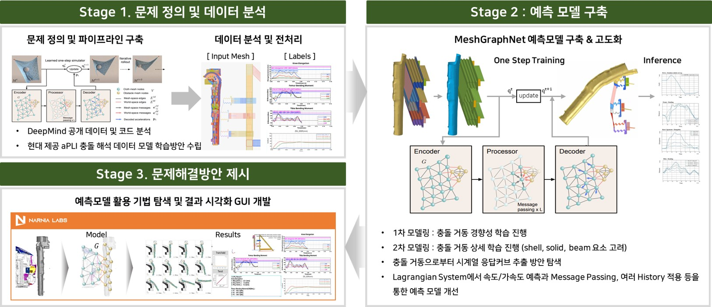

3D 형상데이터 기반 성능예측 GNN 딥러닝 모델 연구
GNN-Based Deep Learning for Performance Prediction from 3D Geometry Data
Hyundai Motor Group (with Narnia Labs) · Jul. 2022 – Jun. 2023

Overview
보행자 충돌 평가(Euro-NCAP)의 핵심인 Advanced-PLI(aPLI) 충돌 시뮬레이션은 정밀한 구조 동역학 해석으로 시간 비용이 매우 크다. 본 연구는 차량 설계(input) → 충돌 거동 및 상해 시계열 응답 커브(output)를 예측하는 MeshGraphNet 기반 surrogate 모델을 개발해, 복잡한 다중 재료/다중 부품 구조물에 대한 적용 가능성을 체계적으로 평가한다.
My Role
- 역할: 실무책임자(AI Researcher, Narnia Labs)
- aPLI 충돌 데이터 전처리 및 그래프 변환 파이프라인 설계
- MeshGraphNet 모델 아키텍처 확장(shell·solid·beam 요소 동시 처리)
- 충돌 거동에서 시계열 응답 커브 추출 및 검증 자동화
Methodology
3-stage 연구 프레임워크로 진행한다. (1) Stage 1 — 문제 정의/데이터 분석: DeepMind MGN 코드 분석 및 현대 제공 aPLI 충돌 데이터 학습 방안 수립.(2) Stage 2 — 모델 구축/고도화: 1차 거동 경향성 학습 → 2차 상세 거동 학습(다중 요소 고려). Lagrangian System에서 속도/가속도 예측, Message Passing 단계와 history 활용으로 정확도 개선.(3) Stage 3 — 활용 기법 탐색: 예측 결과를 시각화하는 GUI를 통해 디자인 의사결정을 지원.
Results / Key Outcomes
- aPLI 거동 및 13개 상해지수 시계열 응답 커브 예측 가능 모델 확보
- 복잡 구조물(다중 재료/요소)에 대한 MGN 확장성 검증
- 3D Linear Blending Skinning(LBS) 기반 시각화 통합
- 후속 연구(Physics-constrained GNN, Expert Systems with Applications 2025)의 토대 마련